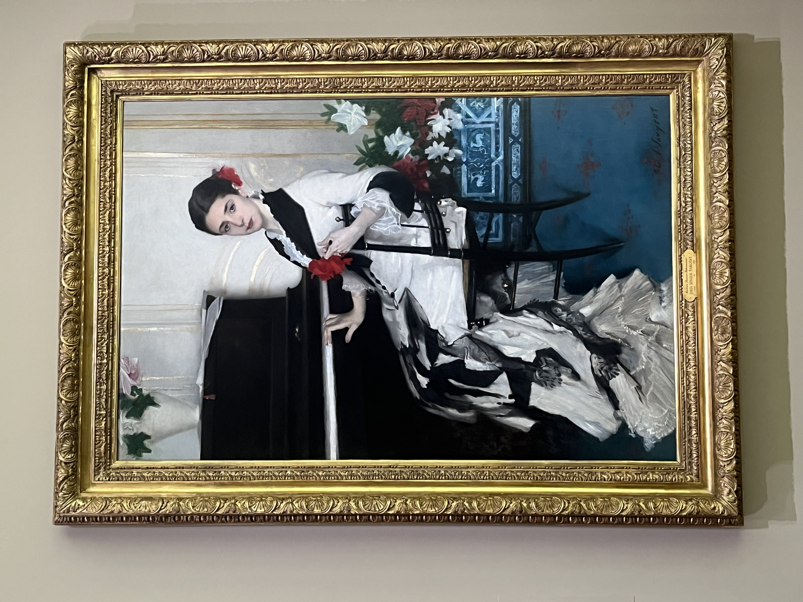
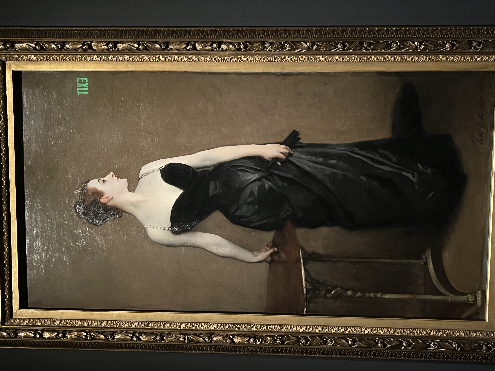
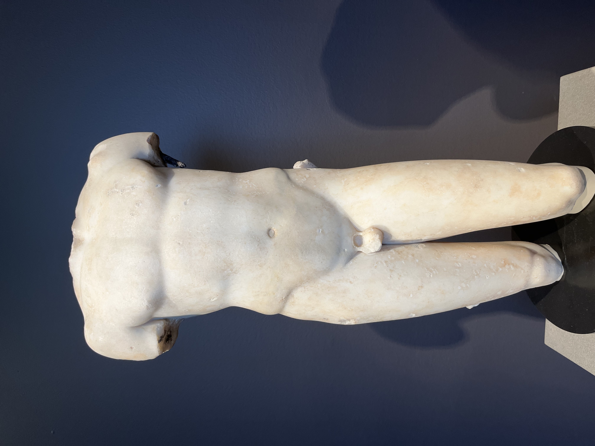

Well，继上次发现MFA rotation很多新的展品后，周六闲来无事又去一趟，看了下Sargent的特展，晚上更是BSO的opening，甚至还有深夜德扑娱乐。
John Singer Sargent
Born in Florence, Italian. 21 old first exhibits. 49 has work in MFA. Spends 20 years working inBoston public library and MFA. Told the sitter what to wore and showed their personality gender and social position. Often change colors and left out the decorative details.
有那么个感觉：出名要趁早啊，人艺术家二十多岁就已经初露峥嵘了，
As he often did, Sargent posed his sitter to conceal the elaborate, sometimes padded, trimmings that defined the back of such ensembles and arranged her train to maximum decorative effect, creating a flowing cascade of blacks and whites.
看着第一眼就感觉很像老妈，很和蔼。
maybe he’s showing us that she’s kind and cheerful. Polka dots, most often seen on walking dresses and daywear, seem suited to Isa’s ebullient personality: Henry James characterized her as “brilliantly friendly” and “eternally juvenile.”
感觉： 老派绅士，海军，不羁
Henry Lee Higginson appears as the embodiment of respectable American manliness. The saber scar on his cheek and the blue military cloak draped across his lap testify to his service in the 1st Massachusetts Cavalry during the Civil War.
Higginson’s acumen as an investment banker, his generous civic philanthropy (he founded the Boston Symphony), and his confident, conventional masculinity were no doubt meant to inspire the men of Harvard.
算是其很出名的一张， 美国崛起，欧洲fashion摇摇欲坠？
Sargent and his sitter confected a portrait that showed off her figure in a pose reminiscent of ancient sculpture.
But when it was displayed at the Paris Salon in 1884, in its original state with one diamond strap falling from her shoulder, the painting was ridiculed, described as indecent and a sensational, vulgar attempt to garner attention.
A fashion faux pas became a potent symbol of upstart Americans who threatened to topple long-standing national hierarchies of fashion, society, and identity.
Young Satyr.
好色之鬼，有尖尖的耳朵和角
模仿希腊之作，对称，修长
The slender proportions, balanced symmetry, and subdued style recall the famous “Kritios Boy” found on the Athenian Akropolis. Here, the suggestive pose and soft, effeminate body accentuate the eroticism of the figure, which probably belonged to the décor of a Roman public bath or private villa.
晚上前往的BSO也颇多故事。
贝多芬 overtone
开场就是煌煌之音，由定音鼓不断带往澎湃，弦乐装饰。发展部变化增多，急切舒缓交杂，小提琴中提琴呼应，最后在强烈定音鼓和弦乐中走向再现部。煌煌之音再现，在四五次高潮后结束。
Mozart Piano Concerto, NO. 23, K488
第一乐章像是圆舞曲，木管弦乐悠扬，仿佛无忧无虑的世外桃源，自顾开心。钢琴入场，琴瑟和鸣，仿佛独自美丽的仙女，（钢琴）也像1900里的主角，为美丽旋律感动。发展部较静谧，最后回到第一主题。
第二乐章是我最喜欢的那一段。颇有冠盖满京华 斯人独憔悴之感，仿佛夜深人静时独自饮酒自伤。后来转为平安喜乐，点滴之美。
第三乐章原谅我就听个情绪，晚上吃的贵州米线在肚子里翻江倒海，着实听不了一点。欢快轻灵中有那么一点今朝有酒今朝醉的及时行乐。
最让我意外的是还能听到Duke Ellington的爵士。听了架子鼓钢琴base和两人奏钢琴，这还是第一次在音乐会里面听爵士，但怎么说，虽然也轻松随性，但和酒吧相比，落了窠臼，少了灵魂。
Gosh，最后吐槽下有一姐们坐我后面一直和男朋友悄悄话或者轻声笑，天，我只能说万幸mozart 第二乐章她比较安静。最后在爵士的时候我回头说能不能安静些，但好景不长，旋即又起。想想爵士，我也忍了，毕竟我在酒吧也一样放浪形骸，否则我真就回头盯着她看了。